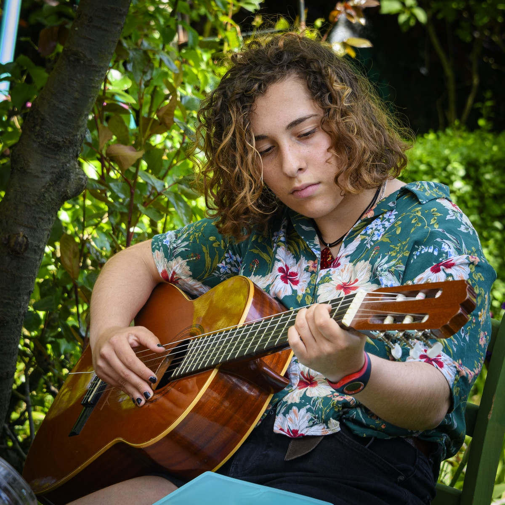

Bonjour, je m'appelle Capucine Millerat. Actuellement scolarisée à l'EMLV, je réalise cette page de profil dans le cadre de mes cours d'initiation au codage. Vous allez avoir l'occasion d'en découvrir un peu plus sur moi et sur mes centres d'intérêts.
Info très importante
Le bénévolat
Le bénévolat me permet de concrétiser mes valeurs par la pratique en soutenant des causes qui me tiennent à coeur. Cela m'a également permis de commencer à développer un réseau et de progresser en softskills notamment.
Voici les associations avec lesquelles j'ai pu faire du bénévolat :
- MakeSense
- Les Scouts et Guides de France
- Le Pain de l'Amitié
- L'ASSHAV
D'ailleurs si vous souhaitez faire une bonne action c'est par ici :
Faites une bonne action 🥺
Pour conclure brièvement, je voudrais vous parler un peu de la précarité étudiante. C'est un sujet qui touche beaucoup d'élèves, même ici, au sein de l'EMLV. Pour nous aider à vivre, je dirais même à survivre avec un minimum, il vous faut agir. Je compte sur vous pour nous soutenir !
La suite de mes aventures (professionnelles), c'est par ici :